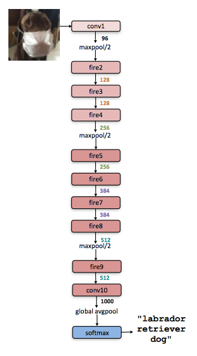

SqueezeNet
SqueezeNet achieves AlexNet-level accuracy on ImageNet with 50x fewer parameters, offering at least three advantages:
- Less communications across servers
- less bandwidth to export model
- more feasible to deploy
The SqueezeNetarchitecture is available for download here
Strategy
- Replace \(3\times3\) filters with \(1\times1\) filters: 9X fewer parameters needed
- Decrease the number of input channels to \(3\times3\) filters
- Downsample late: large activation maps lead to higher accuracy.
The Fire module
A Fire module is comprised of a squeeze layer (which has only 1x1 filters), feeding into an expand layer that has a mix of 1x1 and 3x3 convolution filters.

The following function defines Fire Module by TensorFlow in Python
def fire_module(x,inp,sp,e11p,e33p):
with tf.variable_scope("fire"):
with tf.variable_scope("squeeze"):
W = tf.get_variable("weights",shape=[1,1,inp,sp])
b = tf.get_variable("bias",shape=[sp])
s = tf.nn.conv2d(x,W,[1,1,1,1],"VALID")+b
s = tf.nn.relu(s)
with tf.variable_scope("e11"):
W = tf.get_variable("weights",shape=[1,1,sp,e11p])
b = tf.get_variable("bias",shape=[e11p])
e11 = tf.nn.conv2d(s,W,[1,1,1,1],"VALID")+b
e11 = tf.nn.relu(e11)
with tf.variable_scope("e33"):
W = tf.get_variable("weights",shape=[3,3,sp,e33p])
b = tf.get_variable("bias",shape=[e33p])
e33 = tf.nn.conv2d(s,W,[1,1,1,1],"SAME")+b
e33 = tf.nn.relu(e33)
return tf.concat([e11,e33],3)
The SqueezeNet Architecture
SqueezeNet begins with a standalone convolution layer (conv1), followed by 8 Fire modules (fire2-9), ending with a final conv layer (conv10).

Reference
- Iandola F N, Han S, Moskewicz M W, et al. 2016. SqueezeNet- AlexNet-level accuracy with 50x fewer parameters and < 0.5 MB model size

Image Captioning
Vanilla RNN

LSTM
Long Short Term Memory (LSTM)
Backward flow of gradients in RNN can explode or vanish.
Exploding is controlled with gradient clipping. Vanishing is controlled with additive interactions (LSTM)

COCO
COCO（Common Objects in Context） is a large-scale object detection(物体检测), semantic segmentation(语义分割), and captioning dataset. COCO has several main features: Object segmentation, Recognition in context.
Reference
- Tsung Y L, Michael M, Serge B, et al. Microsoft COCO: Common Objects in Context. arXiv:1405.0312
- Karpathy et al. Deep Visual-Semantic Alignments for Generating Image Descriptions, CVPR 2015
Machine Learning (10): Large Scale Machine Learning
- Learning with Large Datasets
- Stochastic Gradient Descent
- Stochastic Gradient Descent Convergence
- Online Learning
- Map Reduce and Data Parallelism
Learning with Large Datasets
We mainly benefit from a very large dataset when our algorithm has high variance when m is small. Recall that if our algorithm has high bias, more data will not have any benefit.
Datasets can often approach such sizes as m = 100,000,000. In this case, our gradient descent step will have to make a summation over all one hundred million examples. We will want to try to avoid this -- the approaches for doing so are described below.
Stochastic Gradient Descent
Stochastic gradient descent is an alternative to classic (or batch) gradient descent and is more efficient and scalable to large data sets.
Stochastic gradient descent is written out in a different but similar way:
\(cost(\theta,(x^{(i)}, y^{(i)})) = \dfrac{1}{2}(h_{\theta}(x^{(i)}) - y^{(i)})^2\)
The only difference in the above cost function is the elimination of the m constant within \(\dfrac{1}{2}\).
\(J_{train}(\theta) = \dfrac{1}{m} \displaystyle \sum_{i=1}^m cost(\theta, (x^{(i)}, y^{(i)}))\)
\(J_{train}\) is now just the average of the cost applied to all of our training examples.
The algorithm is as follows
Randomly 'shuffle' the dataset
For \(i = 1\dots m\)
\(\Theta_j := \Theta_j - \alpha (h_{\Theta}(x^{(i)}) - y^{(i)}) \cdot x^{(i)}_j\)
This algorithm will only try to fit one training example at a time. This way we can make progress in gradient descent without having to scan all m training examples first. Stochastic gradient descent will be unlikely to converge at the global minimum and will instead wander around it randomly, but usually yields a result that is close enough. Stochastic gradient descent will usually take 1-10 passes through your data set to get near the global minimum.
Mini-Batch Gradient Descent
Mini-batch gradient descent can sometimes be even faster than stochastic gradient descent. Instead of using all m examples as in batch gradient descent, and instead of using only 1 example as in stochastic gradient descent, we will use some in-between number of examples b.
Typical values for b range from 2-100 or so.
For example, with b=10 and m=1000:
Repeat:
For \(i = 1,11,21,31,\dots,991\)
\(\theta_j := \theta_j - \alpha \dfrac{1}{10} \displaystyle \sum_{k=i}^{i+9} (h_\theta(x^{(k)}) - y^{(k)})x_j^{(k)}\)
We're simply summing over ten examples at a time. The advantage of computing more than one example at a time is that we can use vectorized implementations over the b examples.
Stochastic Gradient Descent Convergence
How do we choose the learning rate α for stochastic gradient descent? Also, how do we debug stochastic gradient descent to make sure it is getting as close as possible to the global optimum?
One strategy is to plot the average cost of the hypothesis applied to every 1000 or so training examples. We can compute and save these costs during the gradient descent iterations.
With a smaller learning rate, it is possible that you may get a slightly better solution with stochastic gradient descent. That is because stochastic gradient descent will oscillate and jump around the global minimum, and it will make smaller random jumps with a smaller learning rate.
If you increase the number of examples you average over to plot the performance of your algorithm, the plot's line will become smoother.
With a very small number of examples for the average, the line will be too noisy and it will be difficult to find the trend.
One strategy for trying to actually converge at the global minimum is to slowly decrease α over time . For example \(\alpha = \dfrac{\text{const1}}{\text{iterationNumber + const2}}\)
However, this is not often done because people don't want to have to fiddle with even more parameters.
Online Learning
With a continuous stream of users to a website, we can run an endless loop that gets (x,y), where we collect some user actions for the features in x to predict some behavior y.
You can update θ for each individual (x,y) pair as you collect them. This way, you can adapt to new pools of users, since you are continuously updating theta.
Map Reduce and Data Parallelism
We can divide up batch gradient descent and dispatch the cost function for a subset of the data to many different machines so that we can train our algorithm in parallel.
You can split your training set into z subsets corresponding to the number of machines you have. On each of those machines calculate \(\displaystyle \sum_{i=p}^{q}(h_{\theta}(x^{(i)}) - y^{(i)}) \cdot x_j^{(i)}\), where we've split the data starting at p and ending at q.
MapReduce will take all these dispatched (or 'mapped') jobs and 'reduce' them by calculating:
\(\Theta_j := \Theta_j - \alpha \dfrac{1}{z}(temp_j^{(1)} + temp_j^{(2)} + \cdots + temp_j^{(z)})\)
For all \(j = 0, \dots, n\).
This is simply taking the computed cost from all the machines, calculating their average, multiplying by the learning rate, and updating theta.
Your learning algorithm is MapReduceable if it can be expressed as computing sums of functions over the training set . Linear regression and logistic regression are easily parallelizable.
For neural networks, you can compute forward propagation and back propagation on subsets of your data on many machines. Those machines can report their derivatives back to a 'master' server that will combine them.

Copyright © 2015 Powered by MWeb, Theme used GitHub CSS.